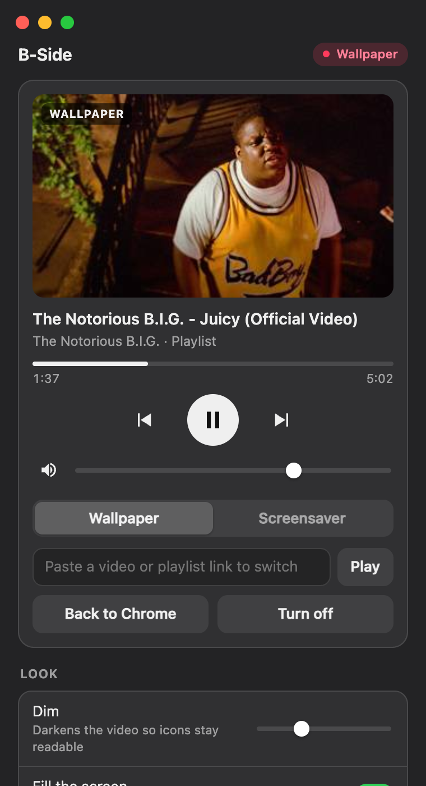
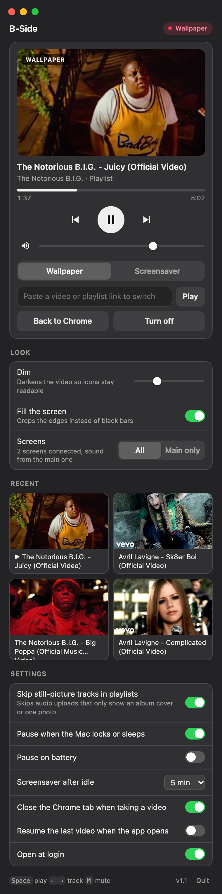

Music videos
behind your windows.
B-Side plays a YouTube video, playlist or mix as your Mac's wallpaper, on every screen and every desktop, with the sound on. Take what's playing in Chrome, or paste a link.

One small remote
Click B-Side in the Dock, or open it again, and the panel comes up. Everything it does is in here. Nothing hides in a preferences window.

1 2 3 4 5 6 7- Now playingThumbnail, title, channel and whether it's a playlist. Seek by clicking the bar.
- Transport and volumePrevious, play and next. Space, ← → and M work while the panel is open.
- Wallpaper or screensaverSwitch at any time. Screensaver ignores a nudge of the trackpad and ends on a click, a key or a proper mouse move.
- Paste a link to switchAny video or playlist, even while something plays. ⌘V anywhere in the panel does the same.
- LookDim the video so desktop icons stay readable, fill the screen or keep black bars, all screens or the main one only.
- RecentThe last eight things you played. A whole mix counts as one.
- SettingsSkip still-picture tracks, pause on lock or battery, screensaver after idle, open at login.
Same video, one sound
Plug in a second screen and it plays there too, on the same track at the same second. Sound comes from the main screen, so you hear it once.
Keyboard shortcuts
They work whichever app you're in. Watching something in Chrome? Press ⌃⌥B and it moves behind your windows. Press it again somewhere else and it goes back to Chrome at the same second.
| ⌃⌥B | Take the YouTube video you're watching in Chrome, or send it back |
|---|---|
| ⌃⌥P | Play or pause |
| ⌃⌥← ⌃⌥→ | Previous or next track |
| ⌃⌥S | Switch between wallpaper and screensaver |
| ⌃⌥M | Mute |
macOS asks once for Accessibility access so the keys work in other apps. Turn them off in Settings if you don't want them.
What it does and needs
| Plays | Any YouTube video, playlist or mix, through YouTube's own embed player. |
|---|---|
| Screens | Every connected screen and every desktop, or the main screen only. Rebuilds itself when you plug a screen in or out. |
| Sound | From the main screen. Other screens are muted and follow it. |
| From Chrome | Takes the YouTube video open in Chrome and closes the tab (you can turn that off). Pauses any other YouTube in Chrome so only one thing plays. Back to Chrome reopens it at the same second, playlist included. |
| Pauses | When the Mac locks or the displays sleep, and on battery if you want. Carries on afterwards. |
| Still pictures | Skips audio uploads that only show an album cover, up to three in a row, and tells you when a mix is all stills. |
| Requires | macOS 13 or later. Google Chrome for the hand-off. Pasted links work without it. |
| Size | 1.2 MB download. Built with tools that ship with macOS, no Xcode. |
| YouTube Premium | Sign in once from Settings and Premium plays without ads. Optional. |
| Privacy | No B-Side account, no analytics, nothing sent anywhere. Settings live in ~/Library/Application Support/B-Side. |
| Price | Free. MIT licence. |
Or drive it from the shell
Everything the panel does, bside does too. It ships in the repo as bin/bside. Link it into your path once.
ln -s "$PWD/bin/bside" ~/.local/bin/bside
$ bside # open the panel $ bside on # take the video open in Chrome $ bside on screensaver # same, straight to screensaver $ bside <youtube link> # play that link $ bside off # back to Chrome at the same second $ bside pause | next | prev | mute $ bside vol 50 | dim 30 | screens main $ bside status # what's playing, as JSON
Four steps, one honest one
B-Side isn't notarised by Apple yet, so macOS stops it the first time. Step three is how you let it through. You only do it once.
- 01Download
B-Side.zip from the latest release, then unzip it.
- 02Move it
Drag B-Side into Applications and open it.
- 03Open Anyway
macOS says it can't check the app. Go to System Settings, then Privacy & Security, scroll down and click Open Anyway.
System Settings › Privacy & Security › Open Anyway - 04Allow Chrome
The first time B-Side takes a video from Chrome, macOS asks if it may control Google Chrome. Click Allow.
Optional: in Chrome, turn on View › Developer › Allow JavaScript from Apple Events. B-Side can then pause YouTube in Chrome when it starts playing, and pick up a video at the exact second you were watching.